RLX: a cross-platform graphical roguelike engine
Intro
Welcome to the RLX project page. RLX is a next-generation roguelike game engine currently being ported to Common Lisp.
Screenshots
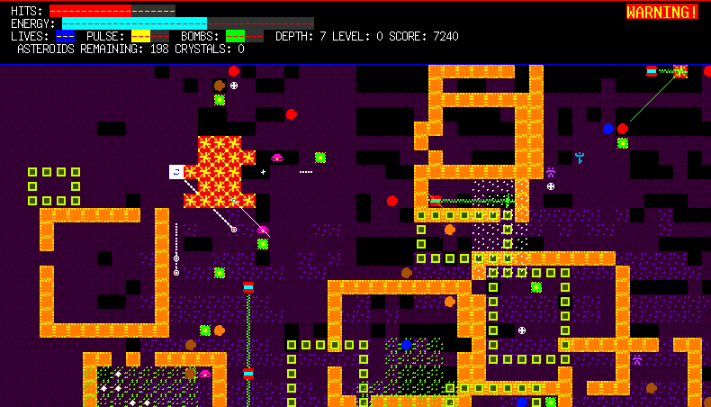
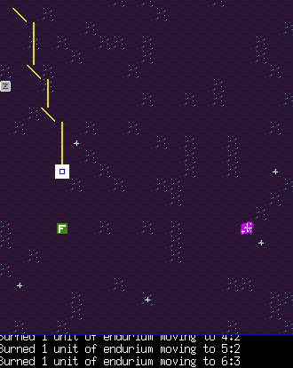
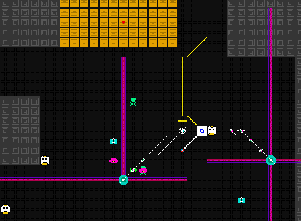
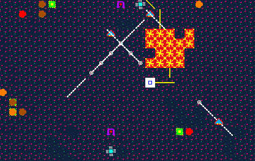
Important links
- http://dto.github.com/notebook/invader.html – Invader Tactics home page (game using RLX)
- http://dto.github.com/notebook/blast.html – Blast Tactics homepage (another RLX demo)
- http://github.com/dto/rlx/tree/master/INSTALL – QUICK START INSTALL GUIDE
- http://dto.github.com/notebook/rlx.html — this page
- http://dto.github.com/notebook/rlx-todo.html — the public RLX todo list and note file
- http://www.youtube.com/dto1138 — Standard-definition youtube videos
- high-def videos are down for now…
- http://github.com/dto/rlx/tree/master — github repo page
- http://github.com/dto/clon/tree/master — you also need this small CL program
- http://common-lisp.net/cgi-bin/mailman/listinfo/rlx — public mailing list
- irc.freenode.net, channel #rlx — discussion and socializing
- http://www.assembla.com/spaces/rlx/stream — assembla.com development group thing
- mailto:dto@gnu.org — me
Status
About 85% ported to Common Lisp. Many things are working (see the images and video links above.)
About
RLX is a portable free-software graphical roguelike engine written in Common Lisp. The system provides a number of tools to build graphical roguelikes:
- Graphical tile map display engine with transparent PNG overlays
- Turn-based action
- In-game objects' properties and behaviors can be defined in Common Lisp
- Basic combat AI support and pathfinding
- Line-of-sight and dynamic lighting
- Point light sources on any object
- Heads-up-display (HUD)
- Terrain/dungeon generation and pattern-based map synthesis
- Integrated menu browser system
RLX uses a custom object system designed especially for games, and defines a reasonable set of default behaviors and functionalities for in-game objects:
- Object weight, containers, inventory, and weight calculation.
- Category keyword system for classifying cells.
- The "Action Points" system measures actor speed and event durations, and thereby determines who gets the next turn.
- Configurable equipment and weapon system not restricted to humanoid actors.
- Basic combat mechanics.
- "Stats" are numeric character attributes able to maintain specified minimum and maximum values, as well as track both temporary and permanent effects on the stat, such as stat-draining monsters. Hit-points are also implemented as a stat.
- Ability for actor cells to move, search, and manipulate their environment.
The first RLX game is called Void Mission. It's a sci-fi roguelike influenced by all the old-school 8-bit stuff I used to play as a kid. I use it to test RLX, but it is also my attempt to (eventually) redefine the boundaries of what is possible in a roguelike, and hopefully to create the best sci-fi roguelike ever!
Old Screenshots from the Emacs Lisp port
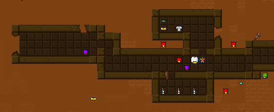
An outdoor scene. Note the cool transparent targeting reticle. 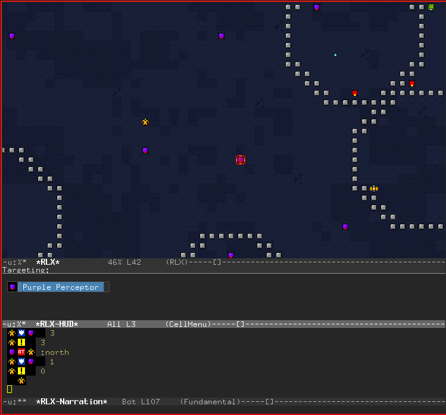
The ray-casting engine at work. 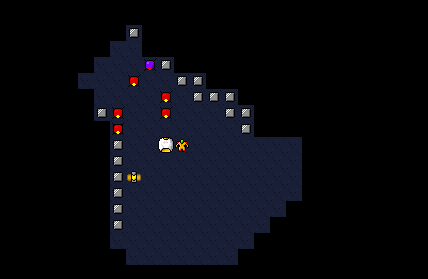
The emacs-based development system. 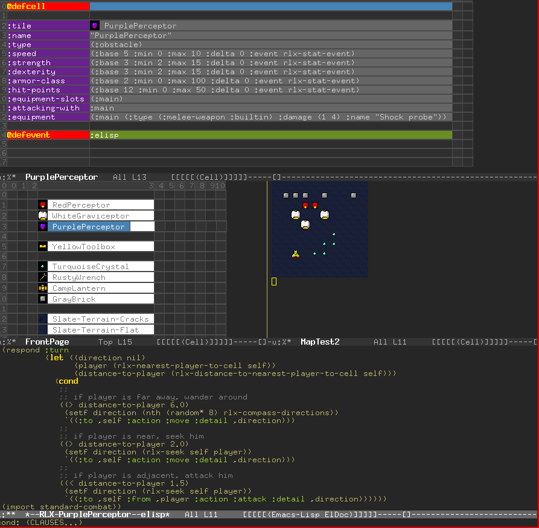
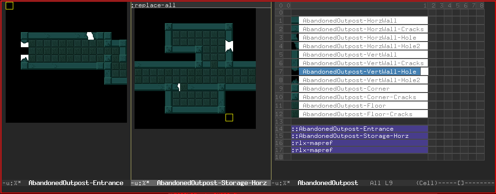
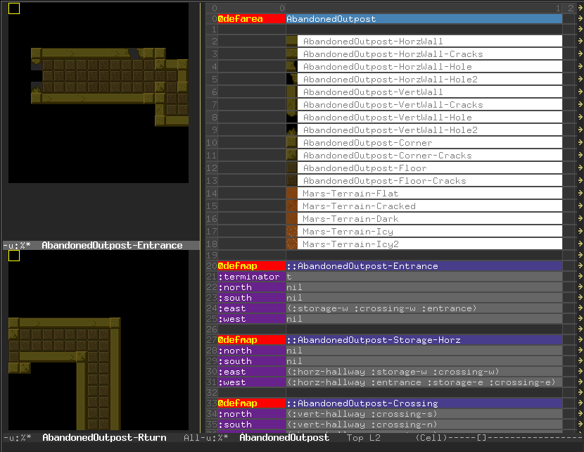
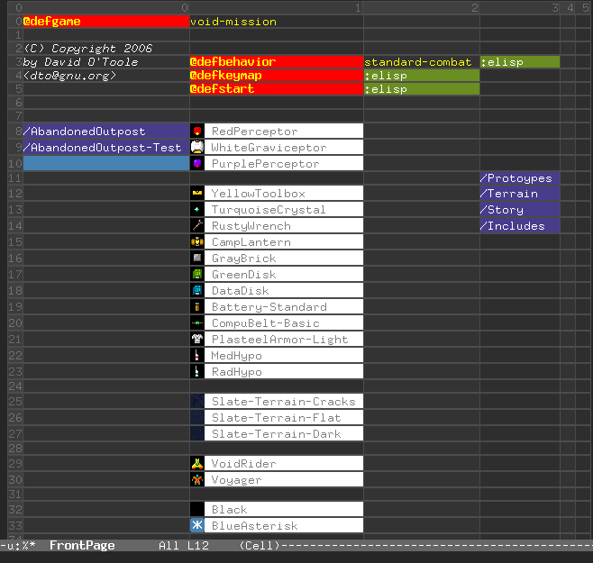
Links
Mars terrain data sets
Pixel Art
Line of sight
Pathfinding
Terrain generation and mapping
- Plasma fractals: http://www2.vo.lu/homepages/phahn/fractals/plasma.htm
- http://en.wikipedia.org/wiki/Procedural_generation
- http://en.wikipedia.org/wiki/Fractals
- http://en.wikipedia.org/wiki/Fractal_landscape
- http://en.wikipedia.org/wiki/L-System
- http://www.geocities.com/area51/6902/t_subdiv.html
- http://www.geocities.com/Area51/6902/terrain.html
- http://citeseer.ifi.unizh.ch/727893.html
- http://citeseer.ifi.unizh.ch/499084.html
- http://www.cs.cmu.edu/~mzucker/code/perlin-noise-math-faq.html
- cities: http://www.centralpictures.com/ce/tp/paper.pdf
- dungeons: http://www.aarg.net/~minam/dungeon_design.html
- mazes: http://www.astrolog.org/labyrnth/algrithm.htm
Procedural content generation
AI
- http://www.gameai.com/nk.paper.html
- comp.games.ai faq: http://www.geocities.com/cagfaq/cf1.htm
- Subsumption: http://ai.eecs.umich.edu/cogarch3/Brooks/Brooks.html
- ATLANTIS: http://ai.eecs.umich.edu/cogarch3/Gat/Gat.htm
Roleplaying
- http://en.wikipedia.org/wiki/GURPS
- http://www.starfrontiers.com/rules
- http://www.starfrontiers.com/modules
- http://www.starfrontiers.com/rules/ADXTOC/SFAD_ExpandedRules.pdf
- http://www.starfrontiers.com/rules/SFAD_Basic.pdf
- http://www.starfrontiers.com/modules/SF0/SF0.pdf
- http://www.starfrontiers.com/modules/SFKH1/SFKH1.pdf
- http://www.starfrontiers.com/modules/SFKH0/SFKH0.pdf
- http://www.starfrontiers.com/rules/ZEBTOC/SFAD_ZebulonsGuide.pdf
- http://www.centralpictures.com/ce/tp/paper.pdf
- http://www.ludism.org/rpg/osprey.pdf
- http://www.vanguardrpg.com/vspace.pdf
Simulations
Roguelike resources
- http://www.statslab.cam.ac.uk/~eva/nhvsadom.html Comparison of ADOM and Nethack
- http://roguelikedevelopment.org/ - Roguelike development resource
- Map generation links @ roguelikedevelopment.org
- http://rltiles.sourceforge.net/ - Freely usable fantasy tiles. Initially I may wish to develop my own abstract sci-fi tileset in the graphical style of Zanac / Guardian Legend. I would of course make these freely available.
- http://roguebasin.roguelikedevelopment.org/index.php?title=Graphical_tiles
- http://roguebasin.roguelikedevelopment.org/index.php?title=Articles
- http://roguebasin.roguelikedevelopment.org/index.php?title=Monster_attacks
- http://roguebasin.roguelikedevelopment.org/index.php?title=Simple_Combat_in_the_Dungeon
- http://roguebasin.roguelikedevelopment.org/index.php?title=Cellular_Automata_Method_for_Generating_Random_Cave-Like_Levels
- http://roguebasin.roguelikedevelopment.org/index.php?title=Roguelike_Intelligence_-_Stateless_AIs